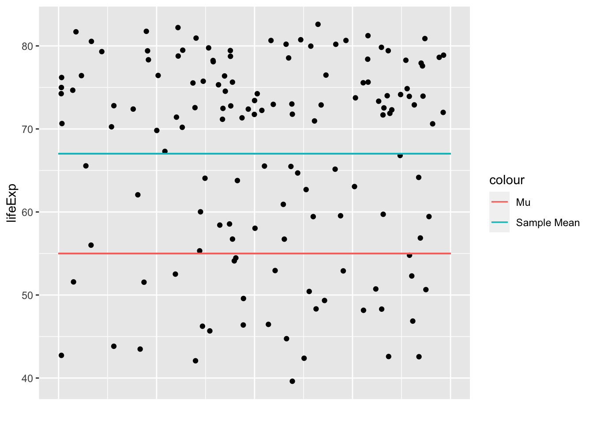

T-Tests (R, Python incomplete)
Red means that the page does not exist yet
Orange means that the page is started
In the tests below we will frequently come across the following concepts:
Total sum of squares represents all the variance around the mean. We create models to try to explain why data points are different to the mean.
Explained sum of squares represents the variance around the mean that is explained by your model.
Unexplained variance represents whatever variance around the mean that isn’t explained by your model. Sometimes the word residual or error is used to capture the difference between the predicted value of a data point (i.e. what would be explained by the model) and the actual data point (the difference being unexplained).
We summarise this ratio of explained vs. unexplained variance using an F value:
\[ F = \frac{SS_{explained}/df_{explained}}{SS_{unexplained}/df_{unexplained}} \]
\(SS_{explained}\) is explained sum of squares
\(SS_{unexplained}\) is the unexplained sum of squares
\(df_{explained}\) is the degrees of freedom (df) for the model explaining the variance. This is generally the number of levels in your model minus 1. For example, if you were testing if life expectancy is explained by which continent a country is in, then the number of levels is the number of continents in your analysis (e.g. 5 continents), and the df would be 5-1=4. The df is used to address uncertainty because we are using a sample to estimate a population, but you don’t need to understand this to continue on this page.
\(df_{unexplained}\) is the degrees of freedom (df) that is not addressed by the model. Generally this is the number of subjects minus 1. Using the above example about continents and life expectancy, each subject could be one of 142 countries in your analysis, and so the df would be 142-1=141.
The key points in the above formula are:
The better your model is the more Sum of Squares will be explained, which will increase F
The more data points (e.g. subjects) you have, the higher your \(df_{unexplained}\) will be, which will also increase F
On this page we will be focusing on simpler analyses that only compare between 2 conditions, which means \(df_{explained}\) will be (2-1=) 1, which simplifies the above formula:
\[ F = \frac{SS_{explained}/df_{explained}}{SS_{unexplained}/df_{unexplained}} = \frac{SS_{explained}/1}{SS_{unexplained}/df_{unexplained}} = \frac{SS_{explained}}{SS_{unexplained}/df_{unexplained}} \]
This allows us to complete simpler analyses to calculate \(t\) values, which are the square root of \(F\):
\[ t = \sqrt{F} = \sqrt{\frac{SS_{explained}}{SS_{unexplained}/df_{unexplained}}} \]
\(t\) values are used for \(t\)-tests, which we’ll address below.
One-Sample t-tests
T-test approach
One sample t-tests try to explain whether variance of data is better explained around one specific value (sample mean \(\bar{x}\)) compared to another (previously assumed value \(\mu\)), when compared to the general variance in the data ( \(\sigma/\sqrt{N}\) explained more below).
\[ t_{oneSample}=\frac{\bar{x} - \mu}{\sigma/\sqrt{N} } \]
For example, imagine that you wanted to test whether life expectancy is higher than 55 across the world:
Your \(\mu\) would be 55. This can be thought of as the assumed population mean that we want to use our sample to test.
Your \(\bar{x}\) would be the sample mean.
Let’s visualise these values using gapminder data from 2007:
library(ggplot2)
library(gapminder)
gapminder_2007 <- subset(
gapminder, # the data set
year == 2007
)
ggplot(gapminder_2007, aes(x=year,y=lifeExp)) +
geom_jitter() +
xlab("") +
theme(axis.text.x = element_blank()) +
theme(axis.ticks.x = element_blank()) +
geom_segment(
aes(
x = 2006.6,
xend = 2007.4,
y = 55,
yend = 55,
color = "Mu"
)
) +
geom_segment(
aes(
x = 2006.6,
xend = 2007.4,
y = mean(lifeExp),
yend = mean(lifeExp),
color = "Sample Mean"
)
)
# load the gapminder module and import the gapminder dataset
from gapminder import gapminder
# import matplotlib
import matplotlib.pyplot as plt
import seaborn as sns
# create a new data frame that only focuses on data from 2007
gapminder_2007 = gapminder.loc[gapminder['year'] == 2007]
# Create the plot
plt.figure(figsize=(8, 4))
# create the scatterplot with some jitter
sns.stripplot(x="year", y='lifeExp', data=gapminder_2007, dodge=True, jitter=0.5)
# add an horizontal line for Mu
plt.axhline(y=55, color='r', linestyle='-', label='Mu')
# add an horizontal line for the mean of 'lifeExp'
plt.axhline(y=gapminder_2007['lifeExp'].mean(), color='g', linestyle='-', label='Sample Mean')
# remove the label on the x-axis
plt.xlabel("")
# remove the tick on the x-axis
plt.xticks([])
# add the legend
plt.legend()
# show the plot
plt.show()
So the t-value will reflect how significantly higher or lower the sample mean (\(\bar{x}\)) is than the assumed population mean (\(\mu\)). Let’s apply the data from our data to the general formula:
\[ t_{oneSample}=\frac{\bar{x} - \mu}{\sigma/\sqrt{N}} = \frac{67.00742-55}{12.07302/\sqrt{142}} = 11.85163 \]
Let’s confirm that we get the same t-value using a function:
# t-statistic
t.test(gapminder_2007$lifeExp, mu=55)
One Sample t-test
data: gapminder_2007$lifeExp
t = 11.852, df = 141, p-value < 2.2e-16
alternative hypothesis: true mean is not equal to 55
95 percent confidence interval:
65.00450 69.01034
sample estimates:
mean of x
67.00742 from scipy import stats
# Perform a t-test
t_statistic, p_value = stats.ttest_1samp(gapminder_2007['lifeExp'], popmean=55)
print("t-statistic:", t_statistic)
print("p-value:", p_value)t-statistic: 11.851628442323024
p-value: 6.463174215427706e-23We can see that the t-value we calculated is the same as calculated by functions (once you take into account rounding numbers). You may have noticed that there is also a p-value associated with t-tests that is very small, suggesting that it is very unlikely that our sample would have such high life expectancy if the \(\mu\) was correct, i.e. if the life expectancy across countries was actually 55 years old. So, the next question is how do we calculate p-values like this using t-values?
Calculating p-values from t-distributions
Similar to the normal distribution, we can calculate how likely it is that you would get a t-value or higher (or lower) by drawing a t-distribution. A t-distribution is like a normal distribution (it’s a bell curve), but also takes into account the number of participants (or data points) using degrees of freedom (N-1). Here are the t-distributions you would get for 101, 21 and 6 participants:
curve(dt(x, df=100), from=-4, to=4, col='green')
curve(dt(x, df=20), from=-4, to=4, col='red', add=TRUE)
curve(dt(x, df=5), from=-4, to=4, col='blue', add = TRUE)
#add legend
legend(-4, .3, legend=c("df=5", "df=20", "df=100"),
col=c("blue", "red", "green"), lty=1, cex=1.2)
import numpy as np
import matplotlib.pyplot as plt
from scipy.stats import t
# Define the x values
x = np.linspace(-4, 4, 1000)
# Create density curves for different degrees of freedom
plt.plot(x, t.pdf(x, df=100), color='green', label='df=100')
plt.plot(x, t.pdf(x, df=20), color='red', label='df=20')
plt.plot(x, t.pdf(x, df=5), color='blue', label='df=5')
# Add a legend
plt.legend(loc='upper left')
# Set axis labels and plot title
plt.xlabel('x')
plt.ylabel('Density')
plt.title('T-Distribution Density Curves')
# Show the plot
plt.show()
We can see that the slopes get steeper the higher the \(df\) is (i.e. the more participants you have). This means that the results become more significant even with the same t-value. Not convinced? Let’s use a t-value of 2 to illustrate this. In the following figure you can see that the area under the curve for a t-value of 2 or more gets visually smaller the more participants/the higher the \(df\) value is:
ggplot(data.frame(x = c(-4, 4)), aes(x)) +
stat_function(fun = dt, args =list(df =5), xlim = c(2,4), geom = "area") +
stat_function(fun = dt, args =list(df =5), color = "blue") +
stat_function(fun = dt, args =list(df =20), color = "red") +
stat_function(fun = dt, args =list(df =100), color = "green") 
from plotnine import ggplot, aes, stat_function, xlim, geom_area, geom_line
from scipy.stats import t
import pandas as pd
# Define the data frame with x values
df = pd.DataFrame({'x': [-4, 4]})
# Create the plot
(
ggplot(df, aes(x='x'))
+ stat_function(fun=lambda x: t.pdf(x, df=5), geom="area", xlim=(2, 4), fill="blue")
+ stat_function(fun=lambda x: t.pdf(x, df=5), color="blue")
+ stat_function(fun=lambda x: t.pdf(x, df=20), color="red")
+ stat_function(fun=lambda x: t.pdf(x, df=100), color="green")
)Remember, area under the curve IS the p-value, so the area under the curve for a t-value of 2 or above for each degrees of freedom is:
# area under the curve for 2 and above
pt(
# t-value
q=2,
# degrees of freedom
df=5,
# is the test of the t-value and below (TRUE) or the t-value and above (FALSE)
lower.tail = FALSE
)[1] 0.05096974pt(
# t-value
q=2,
# degrees of freedom
df=20,
# is the test of the t-value and below (TRUE) or the t-value and above (FALSE)
lower.tail = FALSE
)[1] 0.02963277pt(
# t-value
q=2,
# degrees of freedom
df=100,
# is the test of the t-value and below (TRUE) or the t-value and above (FALSE)
lower.tail = FALSE
)[1] 0.02410609from scipy.stats import t
# t-value
t_value = 2
# Degrees of freedom
df = 5
# Calculate the area under the curve for t >= 2
area_above_2 = 1 - t.cdf(t_value, df=df)
area_above_20.050969739414929105# t-value
t_value = 2
# Degrees of freedom
df = 20
# Calculate the area under the curve for t >= 2
area_above_2 = 1 - t.cdf(t_value, df=df)
area_above_20.02963276772328527# t-value
t_value = 2
# Degrees of freedom
df = 100
# Calculate the area under the curve for t >= 2
area_above_2 = 1 - t.cdf(t_value, df=df)
area_above_20.024106089365566796Note that if you wanted a 2-tailed test (i.e. you didn’t have an expected direction of your finding) you would double the area under the curve/p-value.
Similar principles apply for an F-distribution, described next.
Calculating p-values from F-distributions
As F-values are based on the sum of squares, which are always positive, they cannot be negative. Also, F distributions can reflect more complex designs than t-distributions, such as having both explained and unexplained degrees of freedom. This means that they can have a variety of shapes to reflect these differences in degrees of freedom. First, let’s look at some distributions for designs with 2 conditions but differing numbers of participants:
ggplot(data.frame(x = c(0, 4)), aes(x)) +
# stat_function(fun = df, args =list(df1 =5, df2=1), xlim = c(2,4), geom = "area") +
stat_function(fun = df, args =list(df1 =5, df2=1), color = "blue") +
stat_function(fun = df, args =list(df1 =20, df2=1), color = "red") +
stat_function(fun = df, args =list(df1 =100, df2=1), color = "green") +
annotate("label", x = 2, y = .4, label = "df1 = 5, df2=1", colour="blue") +
annotate("label", x = 2, y = .35, label = "df1 = 20, df2=1", colour="red") +
annotate("label", x = 2, y = .3, label = "df1 = 100, df2=1", colour="green") +
xlab("F-Value") +
ylab("Density")
import pandas as pd
from plotnine import ggplot, aes, stat_function, annotate, labs
from scipy.stats import f
# Create a DataFrame with x values
df = pd.DataFrame({'x': [0, 4]})
# Create the plot
(
ggplot(df, aes(x='x'))
+ stat_function(
fun=lambda x: f.pdf(x, dfn=5, dfd=1),
color='blue'
)
+ stat_function(
fun=lambda x: f.pdf(x, dfn=20, dfd=1),
color='red'
)
+ stat_function(
fun=lambda x: f.pdf(x, dfn=100, dfd=1),
color='green'
)
+ annotate(
"label", x=2, y=0.4, label="df1=5, df2=1", color="blue"
)
+ annotate(
"label", x=2, y=0.35, label="df1=20, df2=1", color="red"
)
+ annotate(
"label", x=2, y=0.3, label="df1=100, df2=1", color="green"
)
+ labs(x="F-Value", y="Density")
)
The shape is roughly the same, but shifts slightly as you get more people. What happens if we look at distributions where there are about 100 people but 2 or more conditions (df2 = 2 or more).
ggplot(data.frame(x = c(0, 4)), aes(x)) +
# stat_function(fun = df, args =list(df1 =5, df2=1), xlim = c(2,4), geom = "area") +
stat_function(fun = df, args =list(df1 =100, df2=1), color = "blue") +
stat_function(fun = df, args =list(df1 =100, df2=2), color = "red") +
stat_function(fun = df, args =list(df1 =100, df2=3), color = "green") +
annotate("label", x = 2, y = .4, label = "df1 = 100, df2=1", colour="blue") +
annotate("label", x = 2, y = .35, label = "df1 = 100, df2=2", colour="red") +
annotate("label", x = 2, y = .3, label = "df1 = 100, df2=3", colour="green") +
xlab("F-Value") +
ylab("Density")
from plotnine import ggplot, aes, stat_function, annotate, labs
# Create a DataFrame with x values
df = pd.DataFrame({'x': [0, 4]})
# Create the plot
(
ggplot(df, aes(x='x'))
+ stat_function(
fun=lambda x: f.pdf(x, dfn=100, dfd=1),
color='blue'
)
+ stat_function(
fun=lambda x: f.pdf(x, dfn=100, dfd=2),
color='red'
)
+ stat_function(
fun=lambda x: f.pdf(x, dfn=100, dfd=3),
color='green'
)
+ annotate(
"label", x=2, y=0.4, label="df1=100, df2=1", color="blue"
)
+ annotate(
"label", x=2, y=0.35, label="df1=100, df2=2", color="red"
)
+ annotate(
"label", x=2, y=0.3, label="df1=100, df2=3", color="green"
)
+ labs(x="F-Value", y="Density")
)In all cases, you get your p-value from calculating the area under the curve for that F-value or above.
beep bop
To calculate the F-Value, we want to create a model that captures explained variance and unexplained variance. This model will aim to explain any variance around the population mean (mu or \(\mu\)). The sample mean could be modeled as such:
\[ y = \bar{y} + e \]
\(y\) is the data point value you are trying to predict.
\(\bar{y}\) is mean of all y data points. Note that for this formula you will always have the same predicted outcome (the mean).
\(e\) is the error, i.e. the residuals that the module do not predict effectively.
If the sample mean is a useful model, then it will explain a large proportion of the variance around the Mu (\(\mu\)) and will also suggested that there is significant reason to reject the \(\mu\) as the real mean of your population.
First, we need to capture how much variance there is around the \(\mu\), which we’ll do using sum of squares:
\[ SS_{total} = \sum(y_i-\mu)^2 \]
- \(y_i\) is an individual data point
Which for the above data would give us:
sum((gapminder_2007$lifeExp - 55)^2)[1] 41025.16# import numpy
import numpy as np
# calculate the squared dfference
np.sum((gapminder_2007['lifeExp'] - 55) ** 2)41025.157014So we have to explain 41025.16 in variance around the \(\mu\).
Our model’s explanation of variance around the \(\mu\) is the sample mean (\(\bar{y}\)). For each data point the variance explained (from the \(mu\)) is the difference between \(\mu\) and \(\bar{y}\), and then that leaves the unexplained variance (from the \(mu\)) as the difference between the data point and the sample mean (\(\bar{y}\)). If we visualise this for a single data point it should look something like:

For the above data point the variance (around the \(\mu\)) explained is \(\bar{y} - \mu = 67.007 - 55 = 22.007\). However, we can see that the model isn’t perfect for this data point, and so there is a residual left over, i.e. a difference between the predicted value of 67.007 and the actual value of 58.04, meaning the unexplained variance is \(67.007 - 58.04 = 8.967\).
Your explained variance by this model is thus a repetition of comparisons of the \(\mu\) and \(\bar{y}\) as many times as there are data points (and squaring this difference to make the values positive):
\[ SS_{explained} = N * (\mu - \bar{x})^2 \]
Which for the above data would give us:
length(gapminder_2007$lifeExp) * (55- mean(gapminder_2007$lifeExp))^2[1] 20473.3len(gapminder_2007['lifeExp']) *( 55 - gapminder_2007['lifeExp'].mean())**220473.303823352093As described above, unexplained variance is the residuals around the sample mean, as this is variance that is not explained by the model. We can summarise what we get when we calculate the sum of squares of these residuals around the sample mean as follows:
\[ SS_{unexplained} = \sum(x_i-\bar{x})^2 \]
Which for the above data would give us
sum((gapminder_2007$lifeExp - mean(gapminder_2007$lifeExp))^2)[1] 20551.85np.sum((gapminder_2007['lifeExp'] - gapminder_2007['lifeExp'].mean()) ** 2)20551.853190647882To capture the effectiveness of the model we can calculate the F-value:
\[ F = \frac{SS_{explained}/df_{explained}}{SS_{unexplained}/df_{unexplained}} = \frac{20473.3/(Predictors)}{20551.85/(N-1)} = \frac{20473.3/1}{20551.85/141} \]
f_value = (length(gapminder_2007$lifeExp) * (55- mean(gapminder_2007$lifeExp))^2) / (
(sum((gapminder_2007$lifeExp - mean(gapminder_2007$lifeExp))^2))/(length(gapminder_2007$lifeExp)-1)
)
f_value[1] 140.4611# Calculate the sum of squared differences between each value in 'lifeExp' and the mean
ss_between = len(gapminder_2007['lifeExp']) * (55 - gapminder_2007['lifeExp'].mean()) ** 2
# Calculate the sum of squared differences within groups
ss_within = np.sum((gapminder_2007['lifeExp'] - gapminder_2007['lifeExp'].mean()) ** 2)
# Calculate the degrees of freedom for between groups and within groups
df_between = 1
df_within = len(gapminder_2007['lifeExp']) - 1
# Calculate the F-statistic
f_value = (ss_between / df_between) / (ss_within / df_within)
print(f_value)140.46109673488004ANVOA vs. T-test formula
Great. So now that we’ve highlighted the GLM approach works for t-tests, can we see how our formula for a GLM simplifies to the formula we usually use for one-sample t-tests:
\[ T = \sqrt{F} = \sqrt{\frac{SS_{exp}/df_{exp}}{SS_{unexp}/df_{unexp}}} = \sqrt{\frac{N * (\mu - \bar{x})^2/(levelsOfPredictors - 1)}{\sum(x_i-\bar{x})^2/(N-1)}} = \]
\[ \sqrt{\frac{N * (\mu - \bar{x})^2/(2-1)}{\sigma^2}} = \frac{\sqrt{N * (\mu - \bar{x})^2}}{\sqrt{\sigma^2}} = \frac{\sqrt{(\mu - \bar{x})^2}}{\sigma/\sqrt{N}} = \frac{\mu - \bar{x}}{\sigma/\sqrt{N}} \] where:
- \(T\) is the t-value
- \(F\) is the f-value
- \(SS_{exp}\) is the sum of squares of the data explained by the model
- \(SS_{unexp}\) is the sum of squares of the data not explained by the model (i.e. the residuals)
- \(df_{exp}\) is the degrees of freedom for the model. As there is only one predictor (the sample mean) and it’s only got 2 levels (1 or 0, however, in all cases the model is comparing the data to the mean, so it’s less intuitive that there are 2 levels).
To confirm, the formula for a one-sample t-test is just:
\[ T = \frac{\mu - \bar{x}}{\sigma/\sqrt{N}} \]
F-values are squares of t-values, so let’s see if this is true here also:
sqrt(f_value)[1] 11.85163t.test(gapminder_2007$lifeExp, mu=55)
One Sample t-test
data: gapminder_2007$lifeExp
t = 11.852, df = 141, p-value < 2.2e-16
alternative hypothesis: true mean is not equal to 55
95 percent confidence interval:
65.00450 69.01034
sample estimates:
mean of x
67.00742 from scipy import stats
# Calculate the square root of the F-value
np.sqrt(f_value)11.851628442323022# Perform a t-test
t_statistic, p_value = stats.ttest_1samp(gapminder_2007['lifeExp'], popmean=55)
print("t-statistic:", t_statistic)
print("p-value:", p_value)t-statistic: 11.851628442323024
p-value: 6.463174215427706e-23Paired samples t-tests
Paired samples t-tests can be approached like 1-sample t-tests, but you first of all need to collapse the data to have a single variable to compare to a \(\mu\) of zero. Let’s do this for gapminder data, comparing life expectancy between 2002 and 2007:
gapminder_2002_2007_life_exp <- gapminder$lifeExp[gapminder$year == 2007] - gapminder$lifeExp[gapminder$year == 2002]
t.test(gapminder_2002_2007_life_exp, mu = 0)
One Sample t-test
data: gapminder_2002_2007_life_exp
t = 14.665, df = 141, p-value < 2.2e-16
alternative hypothesis: true mean is not equal to 0
95 percent confidence interval:
1.135561 1.489439
sample estimates:
mean of x
1.3125 gapminder_2002_2007_life_exp = life_exp_2007.reset_index(drop=True) - life_exp_2002.reset_index(drop=True)
t_statistic, p_value = stats.ttest_1samp(gapminder_2002_2007_life_exp, popmean=0)
print("t-statistic:", t_statistic)
print("p-value:", p_value)t-statistic: 14.664513524875451
p-value: 3.738316746290281e-30The above suggests that life expectancy was significantly different. Let’s see if we get the exact same value when we use a paired t-test in R:
t.test(gapminder$lifeExp[gapminder$year == 2007],gapminder$lifeExp[gapminder$year == 2002], paired=T)
Paired t-test
data: gapminder$lifeExp[gapminder$year == 2007] and gapminder$lifeExp[gapminder$year == 2002]
t = 14.665, df = 141, p-value < 2.2e-16
alternative hypothesis: true mean difference is not equal to 0
95 percent confidence interval:
1.135561 1.489439
sample estimates:
mean difference
1.3125 # Filter data for the year 2007
life_exp_2007 = gapminder[gapminder['year'] == 2007]['lifeExp']
# Filter data for the year 2002
life_exp_2002 = gapminder[gapminder['year'] == 2002]['lifeExp']
# Perform a paired t-test
t_statistic, p_value = stats.ttest_rel(life_exp_2007, life_exp_2002)
print("T-statistic:", t_statistic)
print("P-value:", p_value)t-statistic: 14.664513524875451
p-value: 3.738316746290281e-30Looks identical. Let’s compare formulas to see why this is ( \(\mu\) = 0 , and so it isn’t written) :
\[ t_{paired} = \frac{\bar{x_1} - \bar{x_2}}{\sigma_{pooled}/\sqrt{N}} = \frac{\bar{x_3}}{\sigma_{pooled}/\sqrt{N}} \]
Where
\(\bar{x_1}\) is the mean of condition 1
\(\bar{x_2}\) is the mean of condition 2
\(\bar{x_3}\) is the mean of the result you get when you subtract condition 2 from condition 1 for each participant, i.e. \(mean(x_1-x_2)\).
\[ \sigma_{pooled} = \sqrt{\frac{\sigma_1^2 + \sigma_2^2}{2}} OR \frac{\sum(x_1 - x_2)^2}{N-1} \] One way effectively gets the average of the standard deviations of condition and 1. The second way gets the standard deviation of the differences between conditions 1 and 2. Both give you the same outcome.
\(N\) is the number of participants
You can rewrite the above formula to compare \(\bar{x_3}\) to \(\mu\), as we know \(\mu\) is zero, which would make this formula (effectively) identical to the one above for one-sample t-tests:
\[ \frac{\bar{x_3} - \mu}{\sigma_{pooled}/\sqrt{N}} \]
The following explains how to calculate F if analysing your data as a model. This isn’t necessary if you just want to complete a t-test, but does help clarify how t-tests overlap with ANOVAs and regressions.
To calculate the F value we will use the following formula:
\[ F = \frac{SS_{explained}/df_{explained}}{SS_{unexplained}/df_{unexplained}} \]
So the question is, what is our model, and what is explained and what is not explained by it. Our model is that life expectancy is explained by year. We predict that any difference between 2002 and 2007 in life expectancy in any country’s is the mean life expectancy difference across all countries. The sum of squares thus is the mean difference between 2007 and 2002’s life expectancy multiplied by the number of countries:
\[ SS_{explained} = \sum_{country}{{((\bar{lifeExp}_{2007} - \bar{lifeExp}_{2002}})^2)} = ((\bar{lifeExp}_{2007} - \bar{lifeExp}_{2002})^2) * N_{countries} \]
library(tidyverse)── Attaching core tidyverse packages ──────────────────────── tidyverse 2.0.0 ──
✔ dplyr 1.1.3 ✔ readr 2.1.4
✔ forcats 1.0.0 ✔ stringr 1.5.0
✔ lubridate 1.9.3 ✔ tibble 3.2.1
✔ purrr 1.0.2 ✔ tidyr 1.3.0
── Conflicts ────────────────────────────────────────── tidyverse_conflicts() ──
✖ dplyr::filter() masks stats::filter()
✖ dplyr::lag() masks stats::lag()
ℹ Use the conflicted package (<http://conflicted.r-lib.org/>) to force all conflicts to become errorsgapminder %>%
filter(year == 2007 | year == 2002) -> gapminder_2007_2002
explained_ss = ((mean(gapminder_2007_2002$lifeExp[gapminder_2007_2002$year == 2002]) - mean(gapminder_2007_2002$lifeExp[gapminder_2007_2002$year == 2007]))^2) * length(unique(gapminder_2007_2002$country))
explained_ss[1] 244.6172\[ SS_{unexplained} = SS_{total} - SS_{explained} \]
So we need to calculate the total Sum of Squares, which is all variance between 2002 and 2007 for each country (squared):
\[ SS_{total} = \sum{((lifeExp_{2007} - lifeExp_{2002})^2)} \]
# restructuring data to simplify processing
gapminder_2007_2002 %>%
select(country, year, lifeExp) %>%
pivot_wider(names_from=year, values_from = lifeExp) -> gapminder_wide
total_ss = sum((gapminder_wide[["2002"]] - gapminder_wide[["2007"]])^2)
total_ss[1] 405.0048To calculate the unexplained variance, let’s subtract the explained from total sum of squares
unexplained_ss = total_ss - explained_ss
unexplained_ss[1] 160.3876Now we can complete the above formula taking into account the explained degrees of freedom is 1 (2 levels -1 = 1), and the unexplained degrees of freedom is 141 (142 countries - 1 = 141):
\[ F = \frac{SS_{explained}/df_{explained}}{SS_{unexplained}/df_{unexplained}} = \frac{244.6172/1}{160.3876/141} = 215.048 \]
Let’s check if this is the same value we get using a function:
ez::ezANOVA(gapminder_2007_2002, within = year, dv= lifeExp, wid = country)$ANOVA$FWarning: "year" will be treated as numeric.Warning: There is at least one numeric within variable, therefore aov() will be
used for computation and no assumption checks will be obtained.[1] 215.048Independent Samples t-tests
ANOVA approach
T-tests are restricted to comparisons between 2 conditions/groups, so we will restrict the Gapminder data to allow a comparison between 2 continents. To see if life expectancy was different if you are born in Europe compared to the Americas, let’s first check what the sum of squares is when you just use the mean as the model of life expectancy across these contents (so we’re not separating by continent yet):
gapminder_americas_europe <- subset(
gapminder_2007, # the data set
continent == "Europe" | continent == "Americas"
)
ggplot(
gapminder_americas_europe, aes(x=rank(lifeExp), y=lifeExp)
) +
geom_point() +
geom_hline(yintercept = mean(gapminder_americas_europe$lifeExp), color="blue") +
geom_segment(
aes(
xend = rank(lifeExp),
yend = mean(lifeExp),
color = "resid"
)
) +
theme(legend.position = "none")gapminder_americas_europe = gapminder_2007.loc[(gapminder_2007['continent'] == "Europe") | (gapminder_2007['continent'] == "Americas")]
gapminder_americas_europe["lifeExp_rank"] = gapminder_americas_europe["lifeExp"].rank()
fig, ax = plt.subplots(figsize =(7, 5))
#scatter plot for the dataset
plt.scatter(gapminder_americas_europe["lifeExp_rank"], gapminder_americas_europe["lifeExp"], color='black', s=10)
# only one line may be specified; full height
plt.axhline(y=gapminder_americas_europe["lifeExp"].mean(), color='blue', ls='-')
plt.vlines(x=gapminder_americas_europe["lifeExp_rank"],ymin=gapminder_americas_europe["lifeExp"], ymax=gapminder_americas_europe["lifeExp"].mean(), colors='red', lw=0.5)
# add title on the x-axis
plt.xlabel("rank(lifeExp)")
# add title on the y-axis
plt.ylabel("lifeExp")
plt.show()
Once we square the errors in the pink lines above, we’ll get the squares:
ggplot(
gapminder_americas_europe,
aes(
x=rank(lifeExp),
# y is the square of the difference between each data point and the mean across all data poins. Once these are summed you will get the sum of squares.
y=(lifeExp-mean(lifeExp))^2
)
) +
geom_point() +
geom_segment(
aes(
xend = rank(lifeExp),
yend = 0,
color = "resid"
)
) +
theme(legend.position = "none")
sum((gapminder_americas_europe$lifeExp - mean(gapminder_americas_europe$lifeExp))^2)[1] 953.4478
fig, ax = plt.subplots(figsize =(7, 5))
#scatter plot for the dataset
plt.scatter(gapminder_americas_europe["lifeExp_rank"], (gapminder_americas_europe["lifeExp"]-gapminder_americas_europe["lifeExp"].mean())**2, color='black', s=10)
# only one line may be specified; full height
plt.vlines(x=gapminder_americas_europe["lifeExp_rank"],ymin=0, ymax=(gapminder_americas_europe["lifeExp"]-gapminder_americas_europe["lifeExp"].mean())**2, colors='red', lw=0.5)
# add title on the x-axis
plt.xlabel("rank(lifeExp)")
# add title on the y-axis
plt.ylabel("(Life Expectancy - mean(Life Expectancy))^2")
plt.show()
sum((gapminder_americas_europe["lifeExp"]-gapminder_americas_europe["lifeExp"].mean())**2)953.4477649818183And when you add all of these together:
\[ SumOfSquares = \sum(Y_i-\bar{Y})^2 = 953.4478 \]
this should be brought earlier!xs
So the aim is to create models that explain the total sum of squares above.
So if the model we create for a t-test would result in a smaller sum of squares then that suggests it’s a more precise model for estimating life expectancy than simply using the mean as a model. This is because this would mean there’s less error in this model. Let’s model this using a t-test. For this we will need to effect code continent:
# create a column to place 1 or -1 for each row dependent on the country
contEffect = NA
contEffect[gapminder_americas_europe$continent == "Europe"] = 1
contEffect[gapminder_americas_europe$continent == "Americas"] = -1
gapminder_americas_europe = cbind(contEffect,gapminder_americas_europe)
rmarkdown::paged_table(head(gapminder_americas_europe))gapminder_americas_europe = gapminder_2007.loc[(gapminder_2007['continent'] == "Europe") | (gapminder_2007['continent'] == "Americas")]
gapminder_americas_europe["contEffect"]=0
gapminder_americas_europe["contEffect"].loc[(gapminder_americas_europe['continent'] == "Europe")]=1
gapminder_americas_europe["contEffect"].loc[(gapminder_americas_europe['continent'] == "Americas")]=-1
cols = list(gapminder_americas_europe.columns)
cols = list(gapminder_americas_europe.columns)
cols = cols[len(cols)-1:len(cols):1]+cols[0:-1:1]
gapminder_americas_europe = gapminder_americas_europe[cols]
print(tabulate(gapminder_americas_europe[:6], headers=gapminder_americas_europe.head(), tablefmt="fancy_grid",showindex=False))
Now that we have effect coded the continent, we can create a new model to try to predict an individual’s life expectancy based on which continent they are from
\[ Y = intercept + \beta * effectVariable + Error \]
Which in our case means:
\[ lifeExp = mean(lifeExp) + \beta * contEffect + Error \]
Y being the predicted life expectancy.
\(\bar{Y}\) being the mean life expectancy regardless of continent. For a t-test this is also the \(intercept\).
\(\beta\) being how much to adjust the prediction based on which continent the person is from
\(contEffect\) being 1 (Europe) or -1 (Americas) to reflect which continent the participant is from
\(Error\) being any error in the prediction not captured by the model
To get the \(intercept\) and \(\beta\) for the above formula let’s use linear model functions:
continent_ttest <- lm(lifeExp ~ contEffect, gapminder_americas_europe)
continent_ttest$coefficients[1] (Intercept)
75.62836 continent_ttest$coefficients[2]contEffect
2.02024 gapminder_americas_europe$t_fit = continent_ttest$coefficients[1] + # intercept
continent_ttest$coefficients[2] * # gradient
gapminder_americas_europe$contEffect
ggplot(gapminder_americas_europe, aes(x = contEffect, y = lifeExp)) +
geom_segment(
position = "jitter",
#arrow = arrow(length = unit(0.01, "npc"),ends = "first"),
aes(
xend = contEffect,
yend = t_fit,
color = "resid"
)
) +
geom_segment(aes(
x = -1.9,
xend = -.1,
y = -1 * continent_ttest$coefficients[2] + continent_ttest$coefficients[1],
yend = -1 * continent_ttest$coefficients[2] + continent_ttest$coefficients[1]),
color = "blue"
) +
geom_segment(
aes(
x = 0.1,
xend = 1.9,
y = 1 * continent_ttest$coefficients[2] + continent_ttest$coefficients[1],
yend = 1 * continent_ttest$coefficients[2] + continent_ttest$coefficients[1]
),
color = "blue"
) +
geom_segment(
aes(
x = - 1.9,
xend = 1.9,
y = mean(lifeExp),
yend = mean(lifeExp)
),
color = "dark green"
)
from scipy import stats
# convert 'contEffect' to type category
gapminder_americas_europe['contEffect'] = gapminder_americas_europe['contEffect'].astype('category')
# lm 'contEffect' ~ 'lifeExp'
continent_ttest = stats.linregress(gapminder_americas_europe['contEffect'],gapminder_americas_europe['lifeExp'])
# show results of lm
continent_ttestLinregressResult(slope=2.020240000000001, intercept=75.62836, rvalue=0.4832076439158285, pvalue=0.00018637488941351192, stderr=0.502794193121279, intercept_stderr=0.5027941931212789)gapminder_americas_europe["contEffect"]=0
gapminder_americas_europe["contEffect"].loc[(gapminder_americas_europe['continent'] == "Europe")]=1
gapminder_americas_europe["contEffect"].loc[(gapminder_americas_europe['continent'] == "Americas")]=-1
gapminder_americas_europe['t_fit'] = continent_ttest.intercept +continent_ttest.slope * gapminder_americas_europe['contEffect']
gapminder_americas_europe['t_res_square'] = (gapminder_americas_europe['lifeExp'] - gapminder_americas_europe['t_fit'])**2
# calculate 'lifeExp' mean for 'contEffect' ==-1
m1 = gapminder_americas_europe["lifeExp"][gapminder_americas_europe['contEffect'] == -1].mean()
# calculate 'lifeExp' mean for 'contEffect' ==1
m2 = gapminder_americas_europe["lifeExp"][gapminder_americas_europe['contEffect'] == 1].mean()
# repeat lifeExp' mean for 'contEffect' ==-1
m11=np.repeat(m1, len(gapminder_americas_europe["lifeExp"][gapminder_americas_europe['contEffect'] == -1]), axis=0)
# repeat lifeExp' mean for 'contEffect' ==1
m22=np.repeat(m2, len(gapminder_americas_europe["lifeExp"][gapminder_americas_europe['contEffect'] == 1]), axis=0)
# create x coordinates for 'contEffect' ==-1
x1 = np.arange(-1.98, -.05, 0.08)
# create x coordinates for 'contEffect' ==1
x2 = np.arange(0.05, 1.98, 0.065)
fig, ax = plt.subplots(figsize =(10, 7))
ax.set_ylim([60, 85])
plt.axhline(y=gapminder_americas_europe["lifeExp"].mean(), color='green', ls='-')
plt.hlines(y=m1,xmin=-1.99, xmax=-.04, colors='blue', lw=0.5)
plt.hlines(y=m2,xmin=1.99, xmax=.04, colors='blue', lw=0.5)
plt.vlines(x= x1,ymin=gapminder_americas_europe["lifeExp"][gapminder_americas_europe['contEffect'] == -1], ymax=m11, colors='red', lw=0.5)
plt.vlines(x= x2,ymin=gapminder_americas_europe["lifeExp"][gapminder_americas_europe['contEffect'] == 1], ymax=m22, colors='red', lw=0.5)
# add title on the x-axis
plt.xlabel("contEffect")
# add title on the y-axis
plt.ylabel("lifeExp")
plt.show()Countries in the americas are dummy coded as -1 and countries in Europe are dummy coded as 1. Note that jittering has been used to help visualise variation within continents, and so all countries in Americas had a \(contEffect\) score of -1, even if the jittering above makes it look like participants from Europe had slightly different \(contEffect\) values to each other.
So now that we’ve visualised the predictions and the error, lets summarise these errors with their sum of squares:
#temp_summary <- summary(lm(lifeExp ~ contEffect, data = gapminder_americas_europe))
summary(aov(lifeExp ~ contEffect, data = gapminder_americas_europe)) Df Sum Sq Mean Sq F value Pr(>F)
contEffect 1 222.6 222.62 16.14 0.000186 ***
Residuals 53 730.8 13.79
---
Signif. codes: 0 '***' 0.001 '**' 0.01 '*' 0.05 '.' 0.1 ' ' 1# between
overall_mean <- mean(gapminder_americas_europe$lifeExp)
europe_mean <- mean(gapminder_americas_europe$lifeExp[gapminder_americas_europe$contEffect == 1])
america_mean <- mean(gapminder_americas_europe$lifeExp[gapminder_americas_europe$contEffect == -1])
ss_between <-
sum(gapminder_americas_europe$contEffect == 1) * (europe_mean - overall_mean)^2 +
sum(gapminder_americas_europe$contEffect == -1) * (america_mean - overall_mean)^2
top_half = ss_between
ss_within = (
sum((gapminder_americas_europe$lifeExp[gapminder_americas_europe$contEffect == 1] - europe_mean)^2) +
sum((gapminder_americas_europe$lifeExp[gapminder_americas_europe$contEffect == -1] - america_mean)^2)
)
bottom_half = (ss_within/(length(gapminder_americas_europe$lifeExp) - 2))
top_half/bottom_half[1] 16.14453# Compare with a t-test
t.test(
gapminder_americas_europe$lifeExp[gapminder_americas_europe$contEffect == 1],
gapminder_americas_europe$lifeExp[gapminder_americas_europe$contEffect == -1],
var.equal = T
)
Two Sample t-test
data: gapminder_americas_europe$lifeExp[gapminder_americas_europe$contEffect == 1] and gapminder_americas_europe$lifeExp[gapminder_americas_europe$contEffect == -1]
t = 4.018, df = 53, p-value = 0.0001864
alternative hypothesis: true difference in means is not equal to 0
95 percent confidence interval:
2.023525 6.057435
sample estimates:
mean of x mean of y
77.64860 73.60812 4.018^2[1] 16.14432# look at a t-distribution compared to an f-distributionimport statsmodels.api as sm
from statsmodels.formula.api import ols
# create the model
model = ols('lifeExp ~ contEffect', data = gapminder_americas_europe).fit()
# create a table for the model
aov_table = sm.stats.anova_lm(model, typ=2)
# display the table
aov_table
# between
overall_mean = gapminder_americas_europe['lifeExp'].mean()
europe_mean = gapminder_americas_europe['lifeExp'][gapminder_americas_europe['contEffect'] == 1].mean()
america_mean = gapminder_americas_europe['lifeExp'][gapminder_americas_europe['contEffect'] == -1].mean()
ss_between =(sum(gapminder_americas_europe['contEffect'] == 1) * (europe_mean - overall_mean)**2) + (sum(gapminder_americas_europe['contEffect'] == -1) * (america_mean - overall_mean)**2)
top_half = ss_between
ss_within = (sum((gapminder_americas_europe['lifeExp'][gapminder_americas_europe['contEffect'] == 1] - europe_mean)**2)+ sum((gapminder_americas_europe['lifeExp'][gapminder_americas_europe['contEffect'] == -1] - america_mean)**2))
bottom_half = (ss_within/(len(gapminder_americas_europe['lifeExp']) - 2))
top_half/bottom_half16.14453# Compare with a t-test
from scipy.stats import ttest_ind
t_test = ttest_ind(gapminder_americas_europe['lifeExp'][gapminder_americas_europe['contEffect'] == 1],gapminder_americas_europe['lifeExp'][gapminder_americas_europe['contEffect'] == -1])
t_testTtest_indResult(statistic=4.018025720342183, pvalue=0.00018637488941352037)4.018 ** 216.144530689331322So the new unexplained variance (AKA residual) is 730.8276, which is smaller than it was when we just used the mean regardless of continent (953.4478; 935.4478 is also the total variance around the mean).
The sum of squares for the effect of continent can be calculated by subtracting the residuals from the total sum of squares (SS):
\[ effect_{SS} = total_{SS} - residual_{SS} = 953.4478 - 730.8276 = 222.6202 \]
The \(effect_{SS}\) can also be thought of our explained variance! So we can actually calculate how much of the model is explained by the model (\(r^2\)):
\[ r^2 = \frac{SS_{explained}}{SS_{total}} = \frac{222.6202}{953.4478} = 0.2335 \]
Let’s confirm that this is correct by comparing a manual calculation and a function:
222.6202/953.4478 # should be 0.2335 [1] 0.2334897summary(lm(lifeExp ~ contEffect, gapminder_americas_europe))$r.squared[1] 0.2334896222.6202/953.44780.23348965722087775# create the model
model = ols('lifeExp ~ contEffect', data = gapminder_americas_europe).fit()
# get the r squared from the model
r_squared = model.rsquared
# Print the R-squared value
print("R-squared:", r_squared)0.2334896271386857Great, the difference reflects a rounding error.
Note that the above formula is similar to the formula for \(r\) from simple regressions. Variance is the square root of the Sum of Squares (or Sum of Squares is the square of variance!):
\[ r = \sqrt{\frac{SS_{explained}}{SS_{total}}} = \frac{\sqrt{SS_{explained}}}{\sqrt{SS_{total}}} =\frac{var_{explained}}{var_{total}} \]
ANOVA approach vs conventional formula
The main formula for an independent samples t-test is:
\[ t = \frac{\bar{X_1} - \bar{X_2}}{SE} \]
However, this is a simplification of the GLM mathematics we’ve been doing above (although \(df\) is the same for the denominator and numerator, so we ignored them as they cancelled out)
\[ t= \sqrt{f} = \sqrt{\frac{SS_{exp}/df_{exp}}{SS_{unexp}/df_{unexp}}} = \frac{(\sum{\bar{X_1} - \mu)/(N_1-1) - (\sum{\bar{X_2} - \mu)}/(N_2-1)}}{ ((\sum{X_{1i} - \bar{X_1}}) + (\sum{X_{2i} - \bar{X_2}}) )/(N-1)}= \frac{\sum{\bar{X_1}/N_1 - \sum{\bar{X_2}}/N_2}}{SE} = \frac{\bar{X_1} - \bar{X_2}}{SE} \]
GLM approach (optional)
If we were to more strictly conceptualise this as a linear model, then we need to create a model that predicts the life expectancy based on the continent. As continent is a categorical variable, we need to allocate numbers for each continent. This can either be dummy coding (1 for 0 for each continent) or effect coding (1 or -1 for each continent). Let’s go through both approaches.
Dummy coding
In this model, we will dummy code America as 1 and Europe as 0. This means that our model will tell us how much life expectancy increases/decreases when you live in America compared to Europe. A general linear model with 1 predictor is generally structured as follows:
\[ Y = a + B*X + e \]
Or in relation to our variables
\[ GDP = a + B_{continent} * X_{continent} + e = \]
\(X\) refers to the value of our dummy coded variable, which is either 0 (Europe) or 1 (Americas).
\(a\) is the intercept, i.e. the value of \(Y\) when \(X = 0\). Thus, as \(X=0\) for Europe, \(a\) is the mean life expectancy in Europe. This will be clarified below.
\(B\) is the gradient (AKA Coefficient AKA Beta) of the predictor. In our case, this will be the difference in means between Europe and the Americas, which will be further clarified below.
\(e\) is the error, or residual (i.e. the difference between the predicted value and the actual value).
So it’s been claimed that \(a\) will be the mean life expectancy in Europe. We can see why this is the case by seeing what happens when \(X=0\), which follows our dummy coding of Europe as 0.
\[ LifeExp = a + B_{continent} * 0 + e = a + e \]
So predicting GDP for Europe is just \(a\) and whatever is not predicted by \(a\) is the error (\(e\)). The best prediction of GDP in Europe is calculating the mean of life expectancy in Europe. Thus \(a\) is the mean life expectancy in Europe.
Now, to get the gradient (\(B\)), we need to calculate how much life expectancy goes up or down as \(X\) increases by 1.
gapminder_americas_europe contEffect country continent year lifeExp pop gdpPercap
1 1 Albania Europe 2007 76.423 3600523 5937.030
2 -1 Argentina Americas 2007 75.320 40301927 12779.380
3 1 Austria Europe 2007 79.829 8199783 36126.493
4 1 Belgium Europe 2007 79.441 10392226 33692.605
5 -1 Bolivia Americas 2007 65.554 9119152 3822.137
6 1 Bosnia and Herzegovina Europe 2007 74.852 4552198 7446.299
7 -1 Brazil Americas 2007 72.390 190010647 9065.801
8 1 Bulgaria Europe 2007 73.005 7322858 10680.793
9 -1 Canada Americas 2007 80.653 33390141 36319.235
10 -1 Chile Americas 2007 78.553 16284741 13171.639
11 -1 Colombia Americas 2007 72.889 44227550 7006.580
12 -1 Costa Rica Americas 2007 78.782 4133884 9645.061
13 1 Croatia Europe 2007 75.748 4493312 14619.223
14 -1 Cuba Americas 2007 78.273 11416987 8948.103
15 1 Czech Republic Europe 2007 76.486 10228744 22833.309
16 1 Denmark Europe 2007 78.332 5468120 35278.419
17 -1 Dominican Republic Americas 2007 72.235 9319622 6025.375
18 -1 Ecuador Americas 2007 74.994 13755680 6873.262
19 -1 El Salvador Americas 2007 71.878 6939688 5728.354
20 1 Finland Europe 2007 79.313 5238460 33207.084
21 1 France Europe 2007 80.657 61083916 30470.017
22 1 Germany Europe 2007 79.406 82400996 32170.374
23 1 Greece Europe 2007 79.483 10706290 27538.412
24 -1 Guatemala Americas 2007 70.259 12572928 5186.050
25 -1 Haiti Americas 2007 60.916 8502814 1201.637
26 -1 Honduras Americas 2007 70.198 7483763 3548.331
27 1 Hungary Europe 2007 73.338 9956108 18008.944
28 1 Iceland Europe 2007 81.757 301931 36180.789
29 1 Ireland Europe 2007 78.885 4109086 40675.996
30 1 Italy Europe 2007 80.546 58147733 28569.720
31 -1 Jamaica Americas 2007 72.567 2780132 7320.880
32 -1 Mexico Americas 2007 76.195 108700891 11977.575
33 1 Montenegro Europe 2007 74.543 684736 9253.896
34 1 Netherlands Europe 2007 79.762 16570613 36797.933
35 -1 Nicaragua Americas 2007 72.899 5675356 2749.321
36 1 Norway Europe 2007 80.196 4627926 49357.190
37 -1 Panama Americas 2007 75.537 3242173 9809.186
38 -1 Paraguay Americas 2007 71.752 6667147 4172.838
39 -1 Peru Americas 2007 71.421 28674757 7408.906
40 1 Poland Europe 2007 75.563 38518241 15389.925
41 1 Portugal Europe 2007 78.098 10642836 20509.648
42 -1 Puerto Rico Americas 2007 78.746 3942491 19328.709
43 1 Romania Europe 2007 72.476 22276056 10808.476
44 1 Serbia Europe 2007 74.002 10150265 9786.535
45 1 Slovak Republic Europe 2007 74.663 5447502 18678.314
46 1 Slovenia Europe 2007 77.926 2009245 25768.258
47 1 Spain Europe 2007 80.941 40448191 28821.064
48 1 Sweden Europe 2007 80.884 9031088 33859.748
49 1 Switzerland Europe 2007 81.701 7554661 37506.419
50 -1 Trinidad and Tobago Americas 2007 69.819 1056608 18008.509
51 1 Turkey Europe 2007 71.777 71158647 8458.276
52 1 United Kingdom Europe 2007 79.425 60776238 33203.261
53 -1 United States Americas 2007 78.242 301139947 42951.653
54 -1 Uruguay Americas 2007 76.384 3447496 10611.463
55 -1 Venezuela Americas 2007 73.747 26084662 11415.806
t_fit
1 77.64860
2 73.60812
3 77.64860
4 77.64860
5 73.60812
6 77.64860
7 73.60812
8 77.64860
9 73.60812
10 73.60812
11 73.60812
12 73.60812
13 77.64860
14 73.60812
15 77.64860
16 77.64860
17 73.60812
18 73.60812
19 73.60812
20 77.64860
21 77.64860
22 77.64860
23 77.64860
24 73.60812
25 73.60812
26 73.60812
27 77.64860
28 77.64860
29 77.64860
30 77.64860
31 73.60812
32 73.60812
33 77.64860
34 77.64860
35 73.60812
36 77.64860
37 73.60812
38 73.60812
39 73.60812
40 77.64860
41 77.64860
42 73.60812
43 77.64860
44 77.64860
45 77.64860
46 77.64860
47 77.64860
48 77.64860
49 77.64860
50 73.60812
51 77.64860
52 77.64860
53 73.60812
54 73.60812
55 73.60812Effect coding
Effect sizes
T-tests
To capture how large the effect is, there are slightly different calculations when doing a within subject design (1 or 2 conditions that all participants complete) vs. a between subject design. In all cases these are Cohen \(d\) calculations.
One Sample T-tests
The size of an effect is how big the difference is between the mean and the \(\mu\) that you are comparing it to, compared to the standard deviation:
\[ d = \frac{\bar{x} - \mu}{SD(x)} \]
The general benchmarks for how big or small a Cohen’s \(d\) value are as follows:
.01 and below is very small (Sawilowsky 2009)
.2 and below is small (Cohen 2013)
.5 is medium (Cohen 2013)
.8 is large (Cohen 2013)
1.2 is very large (Sawilowsky 2009)
2 is huge (Sawilowsky 2009)
Paired sample T-tests
The size of an effect is how big the difference is between the conditions, compared to the standard deviation:
\[ d = \frac{\bar{x_1} - \bar{x_2}}{SD(x_1-x_2)} \]
This actually can be thought of the same as one-sample t-tests after you take the step to calculate the difference between each value in \(x_1\) and \(x_2\) to make \(x_3\) to compare to a \(\mu\) of 0:
\[ x_3 = x_1 - x_2 \] \[ \mu = 0 \] \[ d = \frac{\bar{x_1}-\bar{x_2}}{SD(\bar{x_1}-\bar{x_2})} = \frac{\bar{x_3}}{SD(x_3)} = \frac{\bar{x_3}-\mu}{SD(x_3)} \]
Independent Sample T-tests
The formula for this is somewhat similar to that for a paired samples t-test, but because you are comparing between groups of participants you can’t collapse the values between conditions because there are no pairings. So, you need to calculate the pooled standard deviation.
\[ SD_{pooled} = \sqrt{(SD(x_1)^2 + SD(x_1)^2)/2} \]
\[ d = \frac{\bar{x_1}-\bar{x_2}}{SD_{pooled}} \]
F-tests
The effect sizes for F-tests are based on how much variance is explained by the model, which sometimes is exactly the same as \(r^2\). Let’s review some of the calculations above to confirm this:
\[
r^2 = \frac{SS_{explained}}{SS_{total}} = \frac{222.6202}{953.4478} = 0.2335
\]
If we run a linear model on the data we should also confirm the \(r^2\) is .2335:
summary(lm(lifeExp ~ contEffect, gapminder_americas_europe))
Call:
lm(formula = lifeExp ~ contEffect, data = gapminder_americas_europe)
Residuals:
Min 1Q Median 3Q Max
-12.6921 -2.1364 0.4494 2.5671 7.0449
Coefficients:
Estimate Std. Error t value Pr(>|t|)
(Intercept) 75.6284 0.5028 150.416 < 2e-16 ***
contEffect 2.0202 0.5028 4.018 0.000186 ***
---
Signif. codes: 0 '***' 0.001 '**' 0.01 '*' 0.05 '.' 0.1 ' ' 1
Residual standard error: 3.713 on 53 degrees of freedom
Multiple R-squared: 0.2335, Adjusted R-squared: 0.219
F-statistic: 16.14 on 1 and 53 DF, p-value: 0.0001864import statsmodels.api as sm
import statsmodels.formula.api as smf
# Create the model
model = smf.ols('lifeExp ~ contEffect', data=gapminder_americas_europe)
results = model.fit()
# Print the summary
print(results.summary())
We’ll use a function to confirm that this is the same for eta squared also:
lsr::etaSquared(lm(lifeExp ~ contEffect, gapminder_americas_europe)) eta.sq eta.sq.part
contEffect 0.2334896 0.2334896import statsmodels.api as sm
import statsmodels.formula.api as smf
from statsmodels.stats.anova import anova_lm
# Create the model
model = smf.ols('lifeExp ~ contEffect', data=gapminder_americas_europe)
results = model.fit()
# Calculate eta-squared
anova_table = anova_lm(results)
eta_squared = anova_table['sum_sq'][0] / (anova_table['sum_sq'][0] + anova_table['sum_sq'][1])
print("Eta-squared (η²):", eta_squared)Eta-squared (η²): 0.2334896271386854Boom, you got effect sizes for F-tests like ANOVAs.
If you have understood this page it will set you up for the pages on each type of ANOVA as it uses the same concepts again and again.